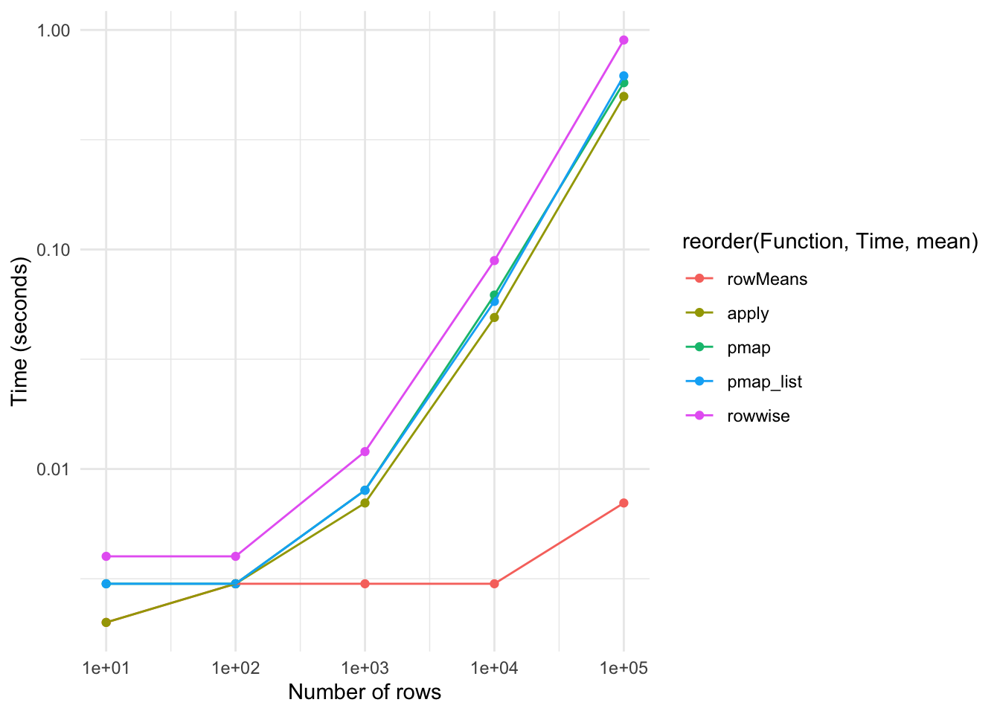

library(tidyverse)Different ways of calculating rowmeans on selected variables in a tidyverse framework
R
Tidyverse
Given the upcoming US elections, several media outlets have shown interest in my research on the heights of US presidents. The Economist improved my graphs.
Recently, I have been trying to force myself to do all my coding in a consistent coding framework. Mostly this means that I want to switch completely to tidyverse/dplyr-style coding. Mostly for reasons of readability and teaching, but it also has a slight OCD-component for myself. I find it weird to use the apply-family of functions within the dplyr-pipes. Mostly, this transition is effortless, however, when it comes to applying some functions on “rows” (values spread across different columns on one row) the process has been painful. It took me much time to figure out how to do it. And I am still not entirely confident in my abilities. I understand the tidy data principles, but something like rowmeans or counting how many variables have missing values for a particular individual (row) is so common that I imagined it to have a bigger role in the dplyr-framework.
I’ll start off with calculating the means of variables for all rows using many different ways using the dplyr-programming framework. I’ll do it for all variables, plus a selection of variables. Note: of course, calculating rowmeans is rather easy and rowMeans is an obvious and easy choice; I have chosen it, though, so that it is also easy to see what is going on in the other possibilities.
packages
data
We’ll use this dataframe:
df <- data.frame(
var1 = c(1, 2),
var2 = c(2, 4),
var3 = c(3, 6)
)
select_vars <- c("var2", "var3")rowmeans
The easiest way is to use the base R rowmeans function:
df %>% mutate(mean_all = rowMeans(.),
mean_sel = rowMeans(select(., select_vars)))Warning: There was 1 warning in `mutate()`.
ℹ In argument: `mean_sel = rowMeans(select(., select_vars))`.
Caused by warning:
! Using an external vector in selections was deprecated in tidyselect 1.1.0.
ℹ Please use `all_of()` or `any_of()` instead.
# Was:
data %>% select(select_vars)
# Now:
data %>% select(all_of(select_vars))
See <https://tidyselect.r-lib.org/reference/faq-external-vector.html>. var1 var2 var3 mean_all mean_sel
1 1 2 3 2 2.5
2 2 4 6 4 5.0Easy. Here I would also consider rowMeans(.[select_vars]) but that clashes with my own rule described above to try to get everything within one framework. rowMeans should be the preferred choice I think.
apply
We can do the same using the apply-functions. This is just to highlight the example. It is clear that there is no reason to do this because rowMeans does an excellent (and faster) job.
df %>% mutate(mean_all = apply(., 1, mean),
mean_sel = apply(select(., select_vars), 1, mean)) var1 var2 var3 mean_all mean_sel
1 1 2 3 2 2.5
2 2 4 6 4 5.0Although this again fine, I’d rather not do this option, because then, for instance in teaching, you would also have to explain a bit about the apply functions. I think it is easier to keep everything within one framework, but this is certainly not needed.
So let’s try frameworks that are more “consistent” with the tidyverse-framework; pmap and rowwise. It took me a long time to get this to work; the pmap-documentation is not (yet) very extensive.
pmap
The map-functions from purrr seem handy in this respect.
This is the solution, and we’ll see a breakdown later (mostly for myself because I didn’t quite understand it initially).
df %>% mutate(mean_all = pmap_dbl(., function(...) mean(c(...))),
mean_sel = pmap_dbl(select(., select_vars),
function(...) mean(c(...)))) var1 var2 var3 mean_all mean_sel
1 1 2 3 2 2.5
2 2 4 6 4 5.0Let’s see what is going on by looking at the easier cases of map and map2.The map-function applies some function to each element from a list. map only uses one list. With the first argument you can specify the variable name of a dataframe that will be seen as a list.
map
df %>% mutate(mean_var2 = map_dbl(var2, mean)) var1 var2 var3 mean_var2
1 1 2 3 2
2 2 4 6 4It is obviously not very sensible to calculate a mean from one number. So let’s try two numbers:
map2
With map2 you can specify two lists, again by using variable names from the dataframe, and map will iterate through all the “rows” (or elements of the lists). If we do the following:
df %>% mutate(mean_var2_3 = map2_dbl(var2, var3, mean)) var1 var2 var3 mean_var2_3
1 1 2 3 2
2 2 4 6 4The code works, but we don’t get the results we want. We get the mean of (of the row of) var2 only, not the mean of the row of var2 and var3. I think this is because the function mean doesn’t know what to do with the second argument, var3, provided to it. It certainly doesn’t see it as a number for the calculation of the mean, because all that information is passed to mean with the first argument var2. So it will only calculate a mean of var2 (for each element in the list of var2).
Let’s improve:
df %>% mutate(mean_var2_3 = map2_dbl(var2, var3, function(x, y) mean(c(x,y)))) var1 var2 var3 mean_var2_3
1 1 2 3 2.5
2 2 4 6 5.0This does what we want! The trick here is that in the previous case, mean didn’t see the two arguments (var2 and var3) as numbers to be used to calculate the mean for. So now we have to specify directly, that both var2 and var3 are numbers that need to be combined (by using c()). So the mean function has only one argument passed to it, namely a combination of the numbers in var2 and var3 (for each row!).
pmap
The pmap function at the start of this section makes more sense now (at least to me). If we want to make use of more than 2 variables (or lists), we can use the pmap function. We need to use ... rather than specifying the columns/lists separately. In the end, we combine all the variables with c(). The nice thing now, is that we can also use the select_vars information that we had stored
df %>% mutate(mean_all = pmap_dbl(., function(...) mean(c(...))),
mean_sel = pmap_dbl(select(., select_vars),
function(...) mean(c(...)))) var1 var2 var3 mean_all mean_sel
1 1 2 3 2 2.5
2 2 4 6 4 5.0rowwise
dplyr also has its rowwise function. It works much less well as you would expect from such a simple sounding function. This is the “solution”.
all_vars_quo <- quo(c(var1, var2, var3))
select_vars_quo <- quo(c(var2, var3))
df %>%
rowwise() %>%
mutate(mean_all = mean(!!all_vars_quo),
mean_sel = mean(!!select_vars_quo))# A tibble: 2 × 5
# Rowwise:
var1 var2 var3 mean_all mean_sel
<dbl> <dbl> <dbl> <dbl> <dbl>
1 1 2 3 2 2.5
2 2 4 6 4 5 I don’t think this is ideal at all. This may be due to my limited understanding of quosures and non-standard evaluation (https://cran.r-project.org/web/packages/dplyr/vignettes/programming.html). Also I wonder whether rowwise is really meant for the tricks we’re after; it’s somehow strongly tied to do, which seems to be related to (statistical) model building mostly.
Also, a huge benefit for me is the “readability” of tidyverse/dplyr R-code (for myself and for teaching). With the !! and quo the code is much less readable I think. I think it is unfortunate that we can’t use the select_vars <- c("var2", "var3") bit, that we have been able to use in all other possibilities.
I think that it would be ideal if there was a rowwise function that would work in this way (not unlike mutate_at):
df %>%
rowwise() %>%
mutate(mean_all = mean(.),
mean_sel = mean(select(., select_vars))Error: <text>:5:0: unexpected end of input
3: mutate(mean_all = mean(.),
4: mean_sel = mean(select(., select_vars))
^I am probably not understanding something fundamental about non-standard evaluation and I probably fail to see what rowwise is for, but I do think the above code reads more like the rowMeans, apply, and pmap coding. If anyone can tell me why this is not an option, I would very much like to hear! Alternatively, I can just not worry, be grateful for the alternatives, and move along.
testing for speed
Similar to this post by Winston Chang, I will now test these alternatives for speed (while shamelessly copying the code by Chang):
# https://rpubs.com/wch/200398
run_benchmark <- function(nrow) {
# Make some data
df <- data.frame(
x = rnorm(nrow),
y = runif(nrow),
z = runif(nrow)
)
res <- list(
rowMeans = system.time(mutate(df, mean_all = rowMeans(df))),
apply = system.time(mutate(df, mean_all = apply(df, 1, mean))),
pmap = system.time(
mutate(df, mean_all = pmap_dbl(df, function(...) mean(c(...))))),
pmap_list = system.time(
mutate(df, mean_all = pmap_dbl(as.list(df), function(...) mean(c(...))))),
# as.list is faster (https://rpubs.com/wch/200398)
rowwise = system.time(
mutate(rowwise(df), mean_all = mean(c(x, y, z))))
)
# Get elapsed times
res <- lapply(res, `[[`, "elapsed")
# Add nrow to front
res <- c(nrow = nrow, res)
res
}
# Run the benchmarks for various size data
all_times <- lapply(1:5, function(n) {
run_benchmark(10^n)
})
# Convert to data frame
times <- lapply(all_times, as.data.frame)
times <- do.call(rbind, times)visualise results
times_long <- times %>% gather(rowMeans, apply, pmap, pmap_list, rowwise,
key = "Function", value = "Time")
ggplot(times_long, aes(x = nrow, y = Time,
colour = reorder(Function, Time, mean))) +
geom_point() +
geom_line() +
scale_x_continuous(trans = "log10") +
scale_y_continuous(trans = "log10") +
theme_minimal() +
labs(x = "Number of rows", y = "Time (seconds)")
rowMeans is a clear winner, but can obviously not be used when you have to do something differently to the rows than means. apply is a bit faster than the pmap-functions. pmap performs better than pmap list (which is opposite to the situation here.rowwise seems to be the least ideal alternative, both in terms of time needed and the code. For other functions than calculating means, I will probably stick to (p)map, because that also lends itself better to statistical modelling.